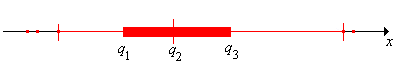

Recall again the basic model of statistics: we have a population of objects of interest, and we have various measurements (variables) that we make on these objects. We select objects from the population and record the variables for the objects in the sample; these become our data. Our first discussion is from a purely descriptive point of view. That is, we do not assume that the data are generated by an underlying probability distribution. But as always, remember that the data themselves define a probability distribution, namely the empirical distribution.
Suppose that \(x\) is a real-valued variable for a population and that \(\bs{x} = (x_1, x_2, \ldots, x_n)\) are the observed values of a sample of size \(n\) corresponding to this variable. The order statistic of rank \(k\) is the \(k\)th smallest value in the data set, and is usually denoted \(x_{(k)}\). To emphasize the dependence on the sample size, another common notation is \(x_{n:k}\). So \[ x_{(1)} \le x_{(2)} \le \cdots \le x_{(n-1)} \le x_{(n)} \]
Naturally, the underlying variable \(x\) should be at least at the ordinal level of measurement. The order statistics have the same physical units as \(x\). One of the first steps in exploratory data analysis is to order the data, so order statistics occur naturally.
In particular, the extreme order statistics are \[ x_{(1)} = \min\{x_1, x_2 \ldots, x_n\}, \quad x_{(n)} = \max\{x_1, x_2, \ldots, x_n\} \] The sample range is \(r = x_{(n)} - x_{(1)}\) and the sample midrange is \(\frac{r}{2} = \frac{1}{2}\left[x_{(n)} - x_{(1)}\right]\).
The sample range and sample midfage have the same physical units as \(x\) and are measures of the dispersion of the data set.
If \(n\) is odd, the sample median is the middle of the ordered observations, namely \(x_{(k)}\) where \(k = \frac{n + 1}{2}\). If \(n\) is even, there is not a single middle observation, but rather two middle observations. So the median interval is \(\left[x_{(k)}, x_{(k + 1)}\right]\) where \(k = \frac{n}{2}\). In this case, the sample median is defined to be the midpoint of the median interval, namely \(\frac{1}{2}\left[x_{(k)} + x_{(k+1)}\right]\) where \(k = \frac{n}{2}\).
In a sense, definition is a bit arbitrary because there is no compelling reason to prefer one point in the median interval over another. For more on this issue, see the discussion of error functions in the section on Sample Variance. In any event, sample median is a natural statistic that gives a measure of the center of the data set.
We can generalize the sample median discussed above to other sample quantiles. Thus, suppose that \(p \in [0, 1]\). Our goal is to find the value that is the fraction \(p\) of the way through the (ordered) data set. We define the rank of the value that we are looking for as \((n - 1)p + 1\). Note that the rank is a linear function of \(p\), and that the rank is 1 when \(p = 0\) and \(n\) when \(p = 1\). But of course, the rank will not be an integer in general, so we let \(k = \lfloor (n - 1)p + 1 \rfloor\), the integer part of the desired rank, and we let \(t = [(n - 1)p + 1] - k\), the fractional part of the desired rank. Thus, \((n - 1)p + 1 = k + t\) where \(k \in \{1, 2, \ldots, n\}\) and \(t \in [0, 1)\). So linear interpolation leads to the following definition:
The sample quantile of order \(p \in [0, 1]\) is \[ x_{[p]} = x_{(k)} + t \left[x_{(k+1)}-x_{(k)}\right] = (1 - t) x_{(k)} + t x_{(k+1)} \] where \(k = \lfloor (n - 1)p + 1 \rfloor\) and \(t = [(n - 1)p + 1] - k\).
Sample quantiles have the same physical units as the underlying variable \(x\). The algorithm really does generalize the results for sample medians in .
The sample quantile of order \(p = \frac{1}{2}\) is the median as defined earlier, in both cases where \(n\) is odd and where \(n\) is even.
Quartiles
Note that \(\iqr\) is a statistic that measures the spread of the distribution about the median, but of course this number gives less information than the interval \([q_1, q_3]\).
Fences
Sometimes lower limit and upper limit are used instead of lower fence and upper fence. Values in the data set that are below the lower fence or above the upper fence are potential outliers, that is, values that don't seem to fit the overall pattern of the data. An outlier can be due to a measurement error, or may be a valid but rather extreme value. In any event, outliers usually deserve additional study.
The five statistics \(\left(x_{(1)}, q_1, q_2, q_3, x_{(n)}\right)\) are often referred to as the five-number summary. Together, these statistics give a great deal of information about the data set in terms of the center, spread, and skewness. The five numbers roughly separate the data set into four intervals each of which contains approximately 25% of the data. Graphically, the five numbers, and the outliers, are often displayed as a boxplot, sometimes called a box and whisker plot. A boxplot consists of an axis that extends across the range of the data. A line is drawn from smallest value that is not an outlier (of course this may be the minimum \(x_{(1)}\)) to the largest value that is not an outlier (of course, this may be the maximum \(x_{(n)}\)). Vertical marks (whiskers
) are drawn at the ends of this line. A rectangular box extends from the first quartile \(q_1\) to the third quartile \(q_3\) and with an additional whisker at the median \(q_2\). Finally, the outliers are denoted as points (beyond the extreme whiskers). All statistical packages will compute the quartiles and most will draw boxplots. The picture below shows a boxplot with 3 outliers.

The algorithm given above is not the only reasonable way to define sample quantiles, and indeed there are lots of alternatives. One natural method would be to first compute the empirical distribution function \[ F(x) = \frac{1}{n} \sum_{i=1}^n \bs{1}(x_i \le x), \quad x \in \R \] Recall that \(F\) has the mathematical properties of a distribution function, and in fact \(F\) is the distribution function of the empirical distribution of the data. Recall that this is the distribution that places probability \(\frac{1}{n}\) at each data value \(x_i\) (so this is the discrete uniform distribution on \(\{x_1, x_2, \ldots, x_n\}\) if the data values are distinct). Thus, \(F(x) = \frac{k}{n}\) for \(x \in [x_{(k)}, x_{(k+1)})\). Then, we could define the quantile function to be the inverse of the distribution function, as we usually do for probability distributions: \[ F^{-1}(p) = \min\{x \in \R: F(x) \ge p\}, \quad p \in (0, 1) \] It's easy to see that with this definition, the quantile of order \(p \in (0, 1)\) is simply \(x_{(k)}\) where \(k = \lceil n p \rceil\).
Another method is to compute the rank of the quantile of order \(p \in (0, 1)\) as \((n + 1)p\), rather than \((n - 1)p + 1\), and then use linear interpolation just as we have done. To understand the reasoning behind this method, suppose that the underlying variable \(x\) takes value in an interval \((a, b)\). Then the \(n\) points in the data set \(\bs{x}\) separate this interval into \(n + 1\) subintervals, so it's reasonable to think of \(x_{(k)}\) as the quantile of order \(\frac{k}{n + 1}\). This method also reduces to the standard calculation for the median when \(p = \frac{1}{2}\). However, the method will fail if \(p\) is so small that \((n + 1) p \lt 1\) or so large that \( (n + 1) p > n \).
The primary definition that we give above is the one that is most commonly used in statistical software and spreadsheets. Moreover, when the sample size \(n\) is large, it doesn't matter very much which of these competing quantile definitions is used. All will give similar results.
Suppose again that \(\bs{x} = (x_1, x_2, \ldots, x_n)\) is a sample of size \(n\) from a population variable \(x\), but now suppose also that \(y = a + b x\) is a new variable, where \(a \in \R\) and \(b \in (0, \infty)\). Recall that transformations of this type are location-scale transformations and often correspond to changes in units. For example, if \(x\) is the length of an object in inches, then \(y = 2.54 x\) is the length of the object in centimeters. If \(x\) is the temperature of an object in degrees Fahrenheit, then \(y = \frac{5}{9}(x - 32)\) is the temperature of the object in degrees Celsius. Let \(\bs{y} = \bs{a} + b \bs{x}\) denote the sample from the variable \(y\).
Order statistics and quantiles are preserved under location-scale transformations:
Part (a) follows easily from the fact that the location-scale transformation is strictly increasing and hence preserves order: \(x_i \lt x_j\) if and only if \(a + b x_i \lt a + b x_j\). For part (b), let \(p \in [0, 1]\) and let \(k \in \{1, 2, \ldots,n\}\) and \(t \in [0, 1)\) be as above in the definition of the sample quantile or order \(p\). Then \[ y_{[p]} = y_{(k)} + t[y_{(k+1)} - y_{(k)}] = a + b x_{(k)} + t[a + b x_{(k+1)} - (a + b x_{(k)})] = a + b\left(x_{(k)} + t [x_{(k+1)}- x_{(k)}]\right) = a + b x_{[p]} \]
Like standard deviation (our most important measure of spread), range and interquartile range are not affected by the location parameter, but are scaled by the scale parameter.
The range and interquartile range of \(\bs{y}\) are
More generally, suppose \(y = g(x)\) where \(g\) is a strictly increasing real-valued function on the set of possible values of \(x\). Let \(\bs{y} = \left(g(x_1), g(x_2), \ldots, g(x_n)\right)\) denote the sample corresponding to the variable \(y\). Then (as in the proof of Theorem 2), the order statistics are preserved so \(y_{(i)} = g(x_{(i)})\). However, if \(g\) is nonlinear, the quantiles are not preserved (because the quantiles involve linear interpolation). That is, \(y_{[p]}\) and \(g(x_{[p]})\) are not usually the same. When \(g\) is convex or concave we can at least give an inequality for the sample quantiles.
Suppose that \(y = g(x)\) where \(g\) is strictly increasing. Then
As noted, part (a) follows since \(g\) is strictly increasing and hence preserves order. Part (b) follows from the definition of convexity. For \(p \in [0, 1]\), and \(k \in \{1, 2, \ldots, n\}\) and \(t \in [0, 1)\) as in the definition of the sample quantile of order \(p\), we have \[ y_{[p]} = (1 - t) y_{(k)} + t y_{(k+1)} = (1 - t) g\left(x_{(k)}\right) + t g\left(x_{(k+1)}\right) \ge g\left[(1 - t) x_{(k)} + t x_{(k+1)}\right] = g\left(x_{[p]}\right) \] Part (c) follows by the same argument.
A stem and leaf plot is a graphical display of the order statistics \(\left(x_{(1)}, x_{(2)}, \ldots, x_{(n)}\right)\). It has the benefit of showing the data in a graphical way, like a histogram, and at the same time, preserving the ordered data. First we assume that the data have a fixed number format: a fixed number of digits, then perhaps a decimal point and another fixed number of digits. A stem and leaf plot is constructed by using an initial part of this string as the stem, and the remaining parts as the leaves. There are lots of variations in how to do this, so rather than give an exhaustive, complicated definition, we will just look at a couple of examples in the exercise below.
We continue our discussion of order statistics except that now we assume that the variables are random variables. Specifically, suppose that we have a basic random experiment, and that \(X\) is a real-valued random variable for the experiment with distribution function \(F\). We perform \(n\) independent replications of the basic experiment to generate a random sample \(\bs{X} = (X_1, X_2, \ldots, X_n)\) of size \(n\) from the distribution of \(X\). Recall that this is a sequence of independent random variables, each with the distribution of \(X\). All of the statistics defined in the previous section make sense, but now of course, they are random variables. We use the notation established previously, except that we follow our usual convention of denoting random variables with capital letters. Thus, for \(k \in \{1, 2, \ldots, n\}\), \(X_{(k)}\) is the \(k\)th order statistic, that is, the \(k\) smallest of \((X_1, X_2, \ldots, X_n)\). Our interest now is on the distribution of the order statistics and statistics derived from them.
Finding the distribution function of an order statistic is a nice application of Bernoulli Trials and the binomial distribution.
The distribution function \( F_k \) of \(X_{(k)}\) is given by \[ F_k(x) = \sum_{j=k}^n \binom{n}{j} \left[F(x)\right]^j \left[1 - F(x)\right]^{n - j}, \quad x \in \R \]
For \( x \in \R \), let \[ N_x = \sum_{i=1}^n \bs{1}(X_i \le x) \] so that \( N_x \) is the number of sample variables that fall in the interval \( (-\infty, x] \). The indicator variables in the sum are independent, and each takes the value 1 with probability \( F(x) \). Thus, \( N_x \) has the binomial distribution with parameters \( n \) and \( F(x) \). Next note that \(X_{(k)} \le x\) if and only if \(N_x \ge k\) for \(x \in \R\) and \(k \in \{1, 2, \ldots, n\}\), since both events mean that there are at least \( k \) sample variables in the interval \( (-\infty x] \). Hence \[ \P\left(X_{(k)} \le x\right) = \P\left(N_x \ge k\right) = \sum_{j=k}^n \binom{n}{j} \left[F(x)\right]^j \left[1 - F(x)\right]^{n - j} \]
As always, the extreme order statistics are particularly interesting.
The distribution functions \( F_1 \) of \( X_{(1)} \) and \( F_n \) of \( X_{(n)} \) are given by
The quantile functions \( F_1^{-1} \) and \( F_n^{-1} \) of \( X_{(1)} \) and \( X_{(n)} \) are given by
When the underlying distribution is continuous, we can give a simple formula for the probability density function of an order statistic.
Suppose now that \(X\) has a continuous distribution with probability density function \( f \). Then \(X_{(k)}\) has a continuous distribution with probability density function \( f_k \) given by \[ f_k(x) = \frac{n!}{(k - 1)! (n - k)!} \left[F(x)\right]^{k-1} \left[1 - F(x)\right]^{n-k} f(x), \quad x \in \R\]
Of course, \(f_k(x) = F_k^\prime(x)\). We take the derivatives term by term and use the product rule on \[ \frac{d}{dx}\left[F(x)\right]^j \left[1 - F(x)\right]^{n-j} = j \left[F(x)\right]^{j-1} f(x) \left[1 - F(x)\right]^{n-j} - (n - j)\left[F(x)\right]^j \left[1 - F(x)\right]^{n-j-1}f(x) \] We use the binomial identities \(j \binom{n}{j} = n \binom{n - 1}{j - 1}\) and \((n - j) \binom{n}{j} = n \binom{n - 1}{j}\). The net effect is \[ f_k(x) = n f(x) \left[ \sum_{j=k}^n \binom{n - 1}{j - 1}[F(x)]^{j-1} [1 - F(x)]^{(n-1)-(j-1)} - \sum_{j=k}^{n-1} \binom{n-1}{j} [F(x)]^j [1 - F(x)]^{(n-1)-j}\right] \] The sums cancel, leaving only the \(j = k\) term in the first sum. Hence \[f_k(x) = n f(x) \binom{n-1}{k-1}[F(x)]^{k-1}[1 - F(x)]^{n-k}\] But \(n \binom{n-1}{k-1} = \frac{n!}{(k-1)!(n-k)!}\).
There is a simple heuristic argument for this result First, \(f_k(x) \, dx\) is the probability that \(X_{(k)}\) is in an infinitesimal interval of size \(dx\) about \(x\). On the other hand, this event means that one of sample variables is in the infinitesimal interval, \(k - 1\) sample variables are less than \(x\), and \(n - k\) sample variables are greater than \(x\). The number of ways of choosing these variables is the multinomial coefficient \[ \binom{n}{k - 1, 1, n - k} = \frac{n!}{(k - 1)! (n - k)!} \] By independence, the probability that the chosen variables are in the specified intervals is \[ \left[F(x)\right]^{k-1} \left[1 - F(x)\right]^{n-k} f(x) \, dx \]
Here are the special cases for the extreme order statistics.
The probability density function \( f_1 \) of \( X_{(1)} \) and \( f_n \) of \( X_{(n)} \) are given by
We assume again that \(X\) has a continuous distribution with distribution function \( F \) and probability density function \( f \).
Suppose that \(j, k \in \{1, 2, \ldots, n\}\) with \(j \lt k\). The joint probability density function \( f_{j,k} \) of \(\left(X_{(j)}, X_{(k)}\right)\) is given by
\[ f_{j,k}(x, y) = \frac{n!}{(j - 1)! (k - j - 1)! (n - k)!} \left[F(x)\right]^{j-1} \left[F(y) - F(x)\right]^{k - j - 1} \left[1 - F(y)\right]^{n-k} f(x) f(y); \quad x, \, y \in \R, x \lt y \]We want to compute the probability that \(X_{(j)}\) is in an infinitesimal interval \(dx\) about \(x\) and \(X_{(k)}\) is in an infinitesimal interval \(dy\) about \(y\). Note that there must be \(j - 1\) sample variables that are less than \(x\), one variable in the infinitesimal interval about \(x\), \(k - j - 1\) sample variables that are between \(x\) and \(y\), one variable in the infinitesimal interval about \(y\), and \(n - k\) sample variables that are greater than \(y\). The number of ways to select the variables is the multinomial coefficient \[ \binom{n}{j-1, 1, k - j - 1, 1, n - k} = \frac{n!}{(j - 1)! (k - j - 1)! (n - k)!} \] By independence, the probability that the chosen variables are in the specified intervals is \[ \left[F(x)\right]^{j-1} f(x) dx \left[F(y) - F(x)\right]^{k - j - 1} f(y) dy \left[1 - F(y)\right]^{n-k} \]
From the joint distribution of two order statistics we can, in principle, find the distribution of various other statistics: the sample range \(R\); sample quantiles \(X_{[p]}\) for \(p \in [0, 1]\), and in particular the sample quartiles \(Q_1\), \(Q_2\), \(Q_3\); and the inter-quartile range IQR. The joint distribution of the extreme order statistics \((X_{(1)}, X_{(n)})\) is a particularly important case.
The joint probability density function \( f_{1,n} \) of \(\left(X_{(1)}, X_{(n)}\right)\) is given by \[ f_{1,n}(x, y) = n (n - 1) \left[F(y) - F(x)\right]^{n-2} f(x) f(y); \quad x, \, y \in \R, x \lt y \]
Arguments similar to the one above can be used to obtain the joint probability density function of any number of the order statistics. Of course, we are particularly interested in the joint probability density function of all of the order statistics. It turns out that this density function has a remarkably simple form.
\(\left(X_{(1)}, X_{(2)}, \ldots, X_{(n)}\right)\) has joint probability density function \( g \) given by \[ g(x_1, x_2, \ldots, x_n) = n! f(x_1) \, f(x_2) \, \cdots \, f(x_n), \quad x_1 \lt x_2 \lt \cdots \lt x_n \]
For each permutation \(\bs{i} = (i_1, i_2, \ldots, i_n)\) of \((1, 2, \ldots, n)\), let \(S_\bs{i} = \{\bs{x} \in \R^n: x_{i_1} \lt x_{i_2} \lt \cdots \lt x_{i_n}\}\). On \(S_\bs{i}\), the mapping \((x_1, x_2, \ldots, x_n) \mapsto (x_{i_1}, x_{i_2}, \ldots, x_{i_n})\) is one-to-one, has continuous first partial derivatives, and has Jacobian 1. The sets \(S_\bs{i}\) where \(\bs{i}\) ranges over the \(n!\) permutations of \((1, 2, \ldots, n)\) are disjoint. The probability that \((X_1, X_2, \ldots, X_n)\) is not in one of these sets is 0. The result now follows from the multivariate change of variables formula.
Again, there is a simple heuristic argument for this result. For each \(\bs{x} \in \R^n\) with \(x_1 \lt x_2 \lt \cdots \lt x_n\), there are \(n!\) permutations of the coordinates of \(\bs{x}\). The probability density of \((X_1, X_2, \ldots, X_n)\) at each of these points is \(f(x_1) \, f(x_2) \, \cdots \, f(x_n)\). Hence the probability density of \((X_{(1)}, X_{(2)}, \ldots, X_{(n)})\) at \(\bs{x}\) is \(n!\) times this product.
A probability plot, also called a quantile-quantile plot or a Q-Q plot for short, is an informal, graphical test to determine if observed data come from a specified distribution. Thus, suppose that we observe real-valued data \((x_1, x_2, \ldots, x_n)\) from a random sample of size \(n\). We are interested in the question of whether the data could reasonably have come from a continuous distribution with distribution function \(F\). First, we order that data from smallest to largest; this gives us the sequence of observed values of the order statistics: \(\left(x_{(1)}, x_{(2)}, \ldots, x_{(n)}\right)\).
Note that we can view \(x_{(i)}\) has the sample quantile of order \(\frac{i}{n + 1}\). Of course, by definition, the distribution quantile of order \(\frac{i}{n + 1}\) is \( y_i = F^{-1} \left( \frac{i}{n + 1} \right) \). If the data really do come from the distribution, then we would expect the points \( \left(\left(x_{(1)}, y_1\right), \left(x_{(2)}, y_2\right) \ldots, \left(x_{(n)}, y_n\right)\right) \) to be close to the diagonal line \(y = x\); conversely, strong deviation from this line is evidence that the distribution did not produce the data. The plot of these points is referred to as a probability plot.
Usually however, we are not trying to see if the data come from a particular distribution, but rather from a parametric family of distributions (such as the normal, uniform, or exponential families). We are usually forced into this situation because we don't know the parameters; indeed the next step, after the probability plot, may be to estimate the parameters. Fortunately, the probability plot method has a simple extension for any location-scale family of distributions. Thus, suppose that \(G\) is a given distribution function. Recall that the location-scale family associated with \(G\) has distribution function \( F(x) = G \left( \frac{x - a}{b} \right)\) for, \(x \in \R \), where \(a \in \R\) is the location parameter and \(b \in (0, \infty)\) is the scale parameter. Recall also that for \(p \in (0, 1)\), if \(z_p = G^{-1}(p)\) denote the quantile of order \(p\) for \(G\) and \(y_p = F^{-1}(p)\) the quantile of order \(p\) for \(F\). Then \( y_p = a + b \, z_p \). It follows that if the probability plot constructed with distribution function \(F\) is nearly linear (and in particular, if it is close to the diagonal line), then the probability plot constructed with distribution function \(G\) will be nearly linear. Thus, we can use the distribution function \(G\) without having to know the location and scale parameters.
In the exercises below, you will explore probability plots for the normal, exponential, and uniform distributions. We will study a formal, quantitative procedure, known as the chi-square goodness of fit test in the chapter on hypothesis testing.
Suppose that \(x\) is the temperature (in degrees Fahrenheit) for a certain type of electronic component after 10 hours of operation. A sample of 30 components has five number summary \((84, 102, 113, 120, 135)\).
Suppose that \(x\) is the length (in inches) of a machined part in a manufacturing process. A sample of 50 parts has five number summary (9.6, 9.8, 10.0, 10.1, 10.3).
Professor Moriarity has a class of 25 students in her section of Stat 101 at Enormous State University (ESU). For the first midterm exam, the five number summary was (16, 52, 64, 72, 81) (out of a possible 100 points). Professor Moriarity thinks the grades are a bit low and is considering various transformations for increasing the grades.
All statistical software packages will compute order statistics and quantiles, draw stem-and-leaf plots and boxplots, and in general perform the numerical and graphical procedures discussed in this section. For real statistical experiments, particularly those with large data sets, the use of statistical software is essential. On the other hand, there is some value in performing the computations by hand, with small, artificial data sets, in order to master the concepts and definitions. In this subsection, do the computations and draw the graphs with minimal technological aids.
Suppose that \(x\) is the number of math courses completed by an ESU student. A sample of 10 ESU students gives the data \(\bs{x} = (3, 1, 2, 0, 2, 4, 3, 2, 1, 2)\).
Suppose that a sample of size 12 from a discrete variable \(x\) has empirical density function given by \(f(-2) = 1/12\), \(f(-1) = 1/4\), \(f(0) = 1/3\), \(f(1) = 1/6\), \(f(2) = 1/6\).
The stem and leaf plot below gives the grades for a 100-point test in a probability course with 38 students. The first digit is the stem and the second digit is the leaf. Thus, the low score was 47 and the high score was 98. The scores in the 6 row are 60, 60, 62, 63, 65, 65, 67, 68.
| 4 | 7 | ||||||||||||
|---|---|---|---|---|---|---|---|---|---|---|---|---|---|
| 5 | 0 | 3 | 4 | 6 | |||||||||
| 6 | 0 | 0 | 2 | 3 | 5 | 5 | 7 | 8 | |||||
| 7 | 0 | 1 | 1 | 2 | 3 | 4 | 6 | 6 | 7 | 8 | 8 | 9 | 9 |
| 8 | 2 | 3 | 3 | 6 | 7 | 8 | 8 | 9 | |||||
| 9 | 1 | 3 | 6 | 8 |
Compute the five number summary and draw the boxplot.
\((47, 65, 75, 83, 98) \)
In the histogram app, construct a distribution with at least 30 values of each of the types indicated below. Note the five number summary.
In the error function app, Start with a distribution and add additional points as follows. Note the effect on the five number summary:
In , you may have noticed that when you add an additional point to the distribution, one or more of the five statistics does not change. In general, quantiles can be relatively insensitive to changes in the data.
Recall that the standard uniform distribution is the uniform distribution on the interval \([0, 1]\).
Suppose that \(\bs{X}\) is a random sample of size \(n\) from the standard uniform distribution. For \( k \in \{1, 2, \ldots, n\} \), \(X_{(k)}\) has the beta distribution, with left parameter \(k\) and right parameter \(n - k + 1\). The probability density function \( f_k \) is given by \[f_k(x) = \frac{n!}{(k - 1)! (n - k)!} x^{k-1} (1 - x)^{n-k}, \quad 0 \le x \le 1\]
In the order statistic experiment, select the standard uniform distribution and \(n = 5\). Vary \(k\) from 1 to 5 and note the shape of the probability density function of \(X_{(k)}\). For each value of \(k\), run the simulation 1000 times and compare the empirical density function to the true probability density function.
It's easy to extend the results for the standard uniform distribution to the general uniform distribution on an interval.
Suppose that \( \bs{X} \) is a random sample of size \( n \) from the uniform distribution on the interval \( [a, a + h] \) where \( a \in \R \) and \( h \in (0, \infty) \). For \( k \in \{1, 2, \ldots, n\} \), \( X_{(k)} \) has the beta distribution with left parameter \( k \), right parameter \( n - k + 1 \), location parameter \( a \), and scale parameter \( h \). In particular,
Suppose that \( \bs{U} = (U_1, U_2, \ldots, U_n) \) is a random sample of size \( n \) from the standard uniform distribution, and let \( X_i = a + h U_i \) for \( i \in \{1, 2, \ldots, n\} \). Then \( \bs{X} = (X_1, X_2, \ldots, X_n) \) is a random sample of size \( n \) from the uniform distribution on the interval \( [a, a + h] \), and moreover, \( X_{(k)} = a + h U_{(k)} \). So the distribution of \( X_{(k)} \) follows from the previous result. Parts (a) and (b) follow from standard results for the beta distribution.
We return to the standard uniform distribution and consider the range of the random sample.
Suppose that \(\bs{X}\) is a random sample of size \(n\) from the standard uniform distribution. The sample range \( R \) has the beta distribution with left parameter \( n - 1 \) and right parameter 2. The probability density function \( g \) is given by \[ g(r) = n (n - 1) r^{n-2} (1 - r), \quad 0 \le r \le 1 \]
From , the joint PDF of \((X_{(1)}, X_{(n)})\) is \(f_{1, n}(x, y) = n (n - 1) (y - x)^{n - 2}\) for \(0 \le x \le y \le 1\). Hence, for \(r \in [0, 1]\), \[ \P(R \gt r) = \P(X_{(n)} - X_{(1)} \gt r) = \int_0^{1-r} \int_{x+r}^1 n (n - 1) (y - x)^{n-2} \, dy \, dx = (n - 1) r^n - n r^{n-1} + 1 \] It follows that the CDF of \(R\) is \(G(r) = n r^{n-1} - (n - 1)r^n\) for \(0 \le r \le 1\). Taking the derivative with respect to \(r\) and simplifying gives the PDF \(g(r) = n (n - 1) r^{n-2} (1 - r)\) for \(0 \le r \le 1\). We can tell from the form of \(g\) that the distribution is beta with left parameter \(n - 1\) and right parameter 2.
Once again, it's easy to extend this result to a general uniform distribution.
Suppose that \( \bs{X} = (X_1, X_2, \ldots, X_n) \) is a random sample of size \( n \) from the uniform distribution on \( [a, a + h] \) where \( a \in \R \) and \( h \in (0, \infty) \). The sample range \( R = X_{(n)} - X_{(1)} \) has the beta distribution with left parameter \( n - 1 \), right parameter \( 2 \), and scale parameter \( h \). In particular,
Suppose again that \( \bs{U} = (U_1, U_2, \ldots, U_n) \) is a random sample of size \( n \) from the standard uniform distribution, and let \( X_i = a + h U_i \) for \( i \in \{1, 2, \ldots, n\} \). Then \( \bs{X} = (X_1, X_2, \ldots, X_n) \) is a random sample of size \( n \) from the uniform distribution on the interval \( [a, a + h] \), and moreover, \( X_{(k)} = a + h U_{(k)} \). Hence \( X_{(n)} - X_{(1)} = h(U_{(n)} - U_{(1)} \) so the distribution of \( R \) follows from the previous result. Parts (a) and (b) follow from standard results for the beta distribution.
The joint distribution of the order statistics for a sample from the uniform distribution is easy to get.
Suppose that \((X_1, X_2, \ldots, X_n)\) is a random sample of size \(n\) from the uniform distribution on the interval \([a, a + h]\), where \(a \in \R\) and \( h \in (0, \infty) \). Then \(\left(X_{(1)}, X_{(2)}, \ldots, X_{(n)}\right)\) is uniformly distributed on \(\left\{\bs{x} \in [a, a + h]^n: a \le x_1 \le x_2 \le \cdots \le x_n \lt a + h\right\}\).
This follows easily from the fact that \((X_1, X_2, \ldots, X_n)\) is uniformly distributed on \([a, a + h]^n\). From , the joint PDF of the order statistics is \(g(x_1, x_2, \ldots, x_n) = n! / h^n\) for \((x_1, x_2, \ldots, x_n) \in [a, a + h]^n\) with \(a \le x_1 \le x_2 \le \cdots \le x_n \le a + h\).
Recall that the exponential distribution with rate parameter \(\lambda \gt 0\) has probability density function \[ f(x) = \lambda e^{-\lambda x}, \quad 0 \le x \lt \infty \] The exponential distribution is widely used to model failure times and other random times under certain ideal conditions. In particular, the exponential distribution governs the times between arrivals in the Poisson process.
Suppose that \(\bs{X}\) is a random sample of size \(n\) from the exponential distribution with rate parameter \(\lambda\). The probability density function of the \(k\)th order statistic \(X_{(k)}\) is \[ f_k(x) = \frac{n!}{(k - 1)! (n - k)!} \lambda (1 - e^{-\lambda x})^{k-1} e^{-\lambda(n - k + 1)x}, \quad 0 \le x \lt \infty \] In particular, the minimum of the variables \(X_{(1)}\) also has an exponential distribution, but with rate parameter \(n \lambda\).
In the order statistic experiment, select the standard exponential distribution and \(n = 5\). Vary \(k\) from 1 to 5 and note the shape of the probability density function of \(X_{(k)}\). For each value of \(k\), run the simulation 1000 times and compare the empirical density function to the true probability density function.
Suppose again that \(\bs{X}\) is a random sample of size \(n\) from the exponential distribution with rate parameter \(\lambda\). The sample range \(R\) has the same distribution as the maximum of a random sample of size \(n - 1\) from the exponential distribution. The probability density function is
\[ h(t) = (n - 1) \lambda (1 - e^{-\lambda t})^{n - 2} e^{-\lambda t}, \quad 0 \le t \lt \infty \]
By , \((X_{(1)}, X_{(n)})\) has joint PDF \(f_{1, n}(x, y) = n (n - 1) \lambda^2 (e^{-\lambda x} - e^{-\lambda y})^{n-2} e^{-\lambda x} e^{-\lambda y}\) for \(0 \le x \le y \lt \infty\). Hence for \(0 \le t \lt \infty\),
\[ \P(R \le t) = \P(X_{(n)} - X_{(1)} \le t) = \int_0^\infty \int_x^{x + t} n (n - 1) \lambda^2 (e^{-\lambda x} - e^{-\lambda y})^{n-2} e^{-\lambda x} e^{-\lambda y} \, dy \, dx \]
Substituting \(u = e^{-\lambda y}\), \(du = -\lambda e^{-\lambda y} \, dy\) into the inside integral and evaluating gives
\[ \P(R \le t) = \int_0^\infty n \lambda e^{-n \lambda x} (1 - e^{-\lambda t})^{n-1} \, dx = (1 - e^{-\lambda t})^{n-1}\]
Differentiating with respect to \(t\) gives the the PDF. Comparing with , we see that this is the PDF of the maximum of a sample of size \(n - 1\) from the exponential distribution.Details:
Suppose again that \(\bs{X}\) is a random sample of size \(n\) from the exponential distribution with rate parameter \(\lambda\). The joint probability density function of the order statistics \((X_{(1)}, X_{(2)}, \ldots, X_{(n)})\) is \[ g(x_1, x_2, \ldots, x_n) = n! \lambda^n e^{-\lambda(x_1 + x_2 + \cdots + x_n)}, \quad 0 \le x_1 \le x_2 \cdots \le x_n \lt \infty \]
Four fair dice are rolled. Find the probability density function of each of the order statistics.
| \(x\) | 1 | 2 | 3 | 4 | 5 | 6 |
|---|---|---|---|---|---|---|
| \(f_1(x)\) | \(\frac{671}{1296}\) | \(\frac{369}{1296}\) | \(\frac{175}{1296}\) | \(\frac{65}{1296}\) | \(\frac{15}{1296}\) | \(\frac{1}{1296}\) |
| \(f_2(x)\) | \(\frac{171}{1296}\) | \(\frac{357}{1296}\) | \(\frac{363}{1296}\) | \(\frac{261}{1296}\) | \(\frac{123}{1296}\) | \(\frac{21}{1296}\) |
| \(f_3(x)\) | \(\frac{21}{1296}\) | \(\frac{123}{1296}\) | \(\frac{261}{1296}\) | \(\frac{363}{1296}\) | \(\frac{357}{1296}\) | \(\frac{171}{1296}\) |
| \(f_4(x)\) | \(\frac{1}{1296}\) | \(\frac{15}{1296}\) | \(\frac{65}{1296}\) | \(\frac{175}{1296}\) | \(\frac{369}{1296}\) | \(\frac{671}{1296}\) |
In the dice experiment, select the order statistic and die distribution given in parts (a)–(d) below. Increase the number of dice from 1 to 20, noting the shape of the probability density function at each stage. Now with \(n = 4\), run the simulation 1000 times and compare the relative frequency function to the probability density function.
Four fair dice are rolled. Find the joint probability density function of the four order statistics.
The joint probability density function \(g\) is defined on \(\{(x_1, x_2, x_3, x_4) \in \{1, 2, 3, 4, 5, 6\}^4: x_1 \le x_2 \le x_3 \le x_4\}\)
Four fair dice are rolled. Find the probability density function of the sample range.
\(R\) has probability density function \(h\) given by \(h(0) = \frac{6}{1296}, \; h(1) = \frac{70}{1296}, \; h(2) = \frac{300}{1296}, \; h(3) = \frac{300}{1296}, \; h(4) = \frac{318}{1296}, \; h(5) = \frac{302}{1296}\)
In the probability plot experiment, set the sampling distribution to normal distribution with mean 5 and standard deviation 2. Set the sample size to \(n = 20\). For each of the following test distributions, run the experiment 50 times and note the geometry of the probability plot:
In the probability plot experiment, set the sampling distribution to the uniform distribution on \([4, 10]\). Set the sample size to \(n = 20\). For each of the following test distributions, run the experiment 50 times and note the geometry of the probability plot:
In the probability plot experiment, Set the sampling distribution to the exponential distribution with parameter 3. Set the sample size to \(n = 20\). For each of the following test distributions, run the experiment 50 times and note the geometry of the probability plot:
Statistical software should be used for the problems in this subsection.
Consider the petal length and species variables in Fisher's iris data.
Consider the erosion variable in the Challenger data set.
A stem and leaf plot of Michelson's velocity of light data is given below. In this example, the last digit (which is always 0) has been left out, for convenience. Also, note that there are two sets of leaves for each stem, one corresponding to leaves from 0 to 4 (so actually from 00 to 40) and the other corresponding to leaves from 5 to 9 (so actually from 50 to 90). Thus, the minimum value is 620 and the numbers in the second 7 row are 750, 760, 760, and so forth.
| 6 | 2 | ||||||||||||||||||||||||||
|---|---|---|---|---|---|---|---|---|---|---|---|---|---|---|---|---|---|---|---|---|---|---|---|---|---|---|---|
| 6 | 5 | ||||||||||||||||||||||||||
| 7 | 2 | 2 | 2 | 4 | 4 | 4 | |||||||||||||||||||||
| 7 | 5 | 6 | 6 | 6 | 6 | 6 | 7 | 8 | 8 | 9 | 9 | 9 | |||||||||||||||
| 8 | 0 | 0 | 0 | 0 | 0 | 1 | 1 | 1 | 1 | 1 | 1 | 1 | 1 | 1 | 1 | 2 | 2 | 3 | 3 | 4 | 4 | 4 | 4 | 4 | 4 | 4 | 4 |
| 9 | 0 | 0 | 1 | 1 | 2 | 3 | 3 | 4 | 4 | 4 | |||||||||||||||||
| 9 | 5 | 5 | 5 | 6 | 6 | 6 | 6 | 7 | 8 | 8 | 8 | ||||||||||||||||
| 10 | 0 | 0 | 0 | ||||||||||||||||||||||||
| 10 | 7 |
Consider Short's paralax of the sun data.
Consider Cavendish's density of the earth data.
Consider the M&M data.
| 5 | 0 | |||||||||||
|---|---|---|---|---|---|---|---|---|---|---|---|---|
| 5 | 3 | |||||||||||
| 5 | 4 | 5 | 5 | 5 | 5 | |||||||
| 5 | 6 | 6 | 6 | 6 | 7 | 7 | 7 | |||||
| 5 | 8 | 8 | 8 | 8 | 8 | 8 | 8 | 8 | 8 | 9 | 9 | 9 |
| 6 | 0 | 0 | 1 | 1 |
Consider the body weight, species, and gender variables in the Cicada data.
Consider Pearson's height data.